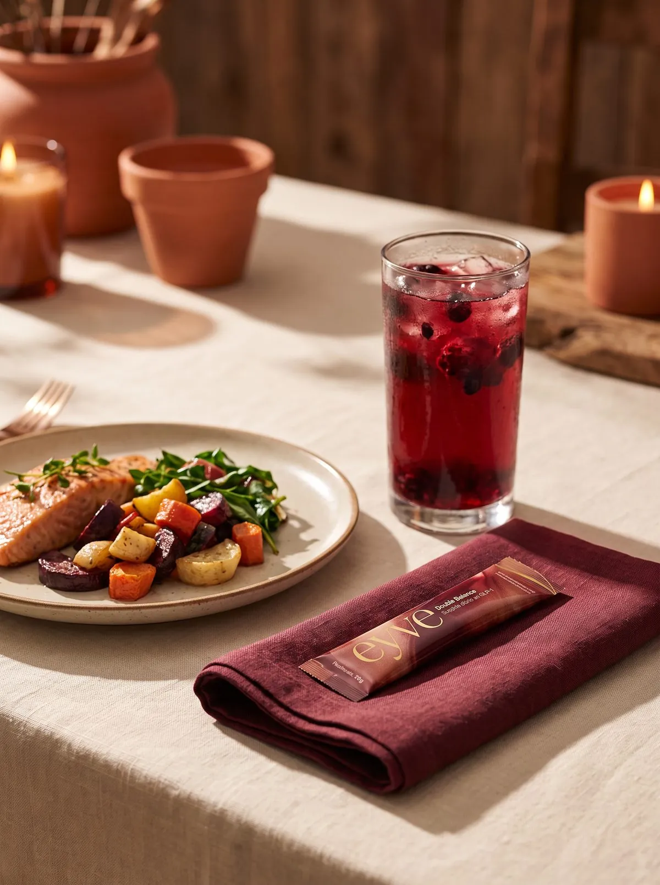
01 · Frente 1
Saciedade mecânica
Pensada pra você chegar ao jantar sem contar cada garfada.
O emagrecimento tem uma Segunda Fase.
Você conquistou uma nova versão de si. Agora é hora de cuidar para que ela continue fazendo parte da sua vida.
A EYVE reúne cinco frentes de suporte em um único sachê para usar antes do jantar. Sem protocolos complicados, sem precisar montar uma rotina com vários produtos diferentes.
Quero começar minha Segunda FaseCompra única. Sem assinatura.
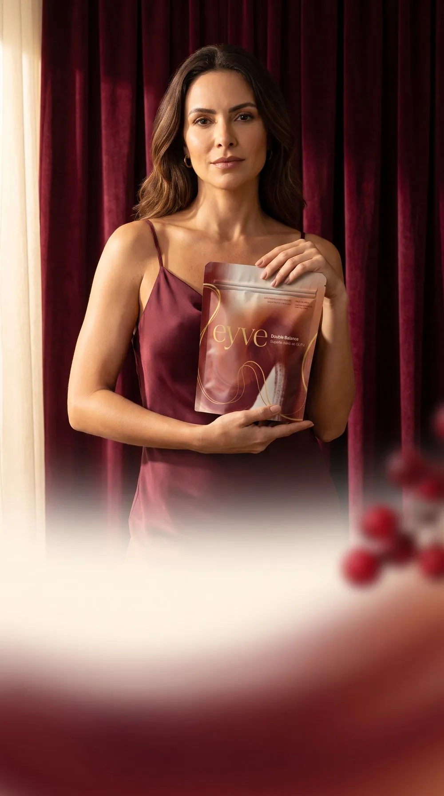
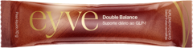
Ritual simples antes do jantarParar de pensar só em emagrecer muda a pergunta.
É justamente nesse momento que algumas situações começam a ocupar espaço demais na cabeça:
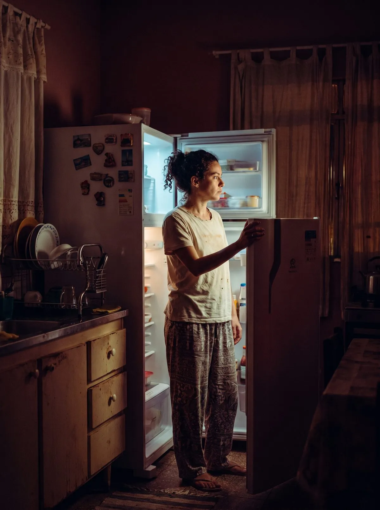
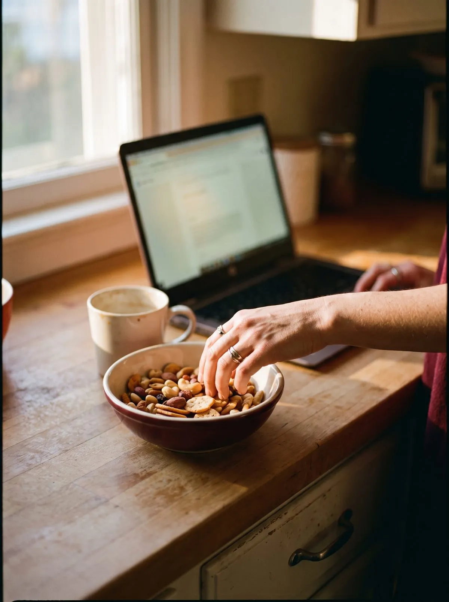
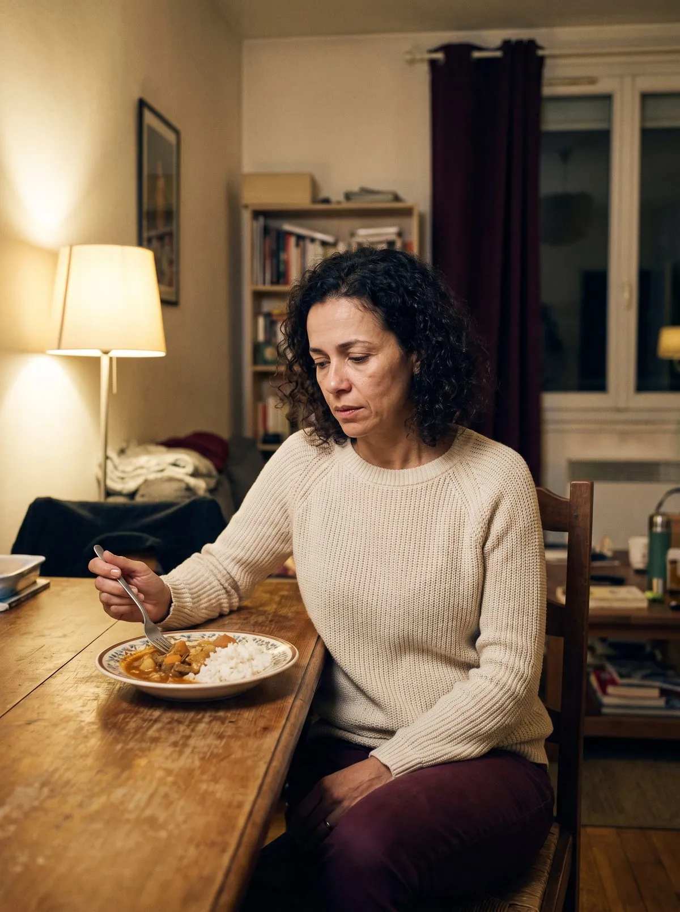
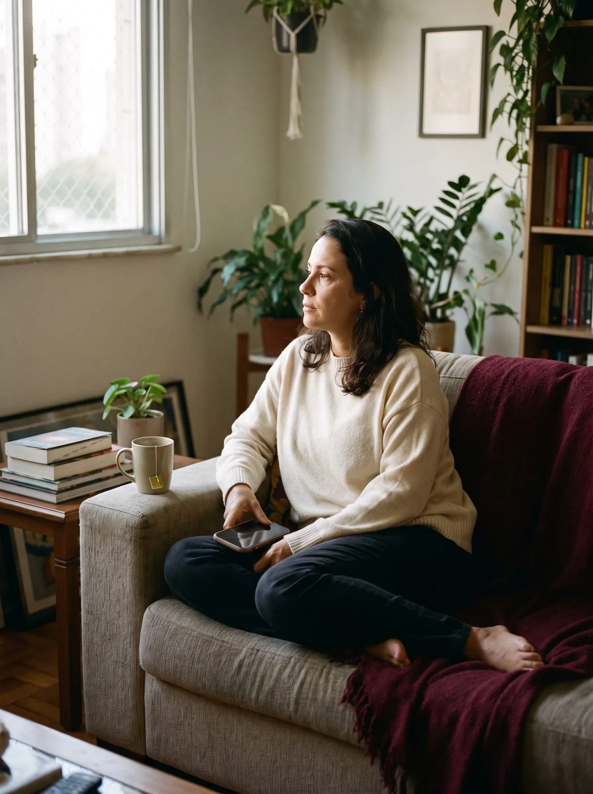
O problema é que você já passou por uma transformação. Você não quer transformar a manutenção em uma nova batalha. Nem viver os próximos meses em estado permanente de vigilância. Você precisa de uma estratégia pensada para a fase em que está agora.
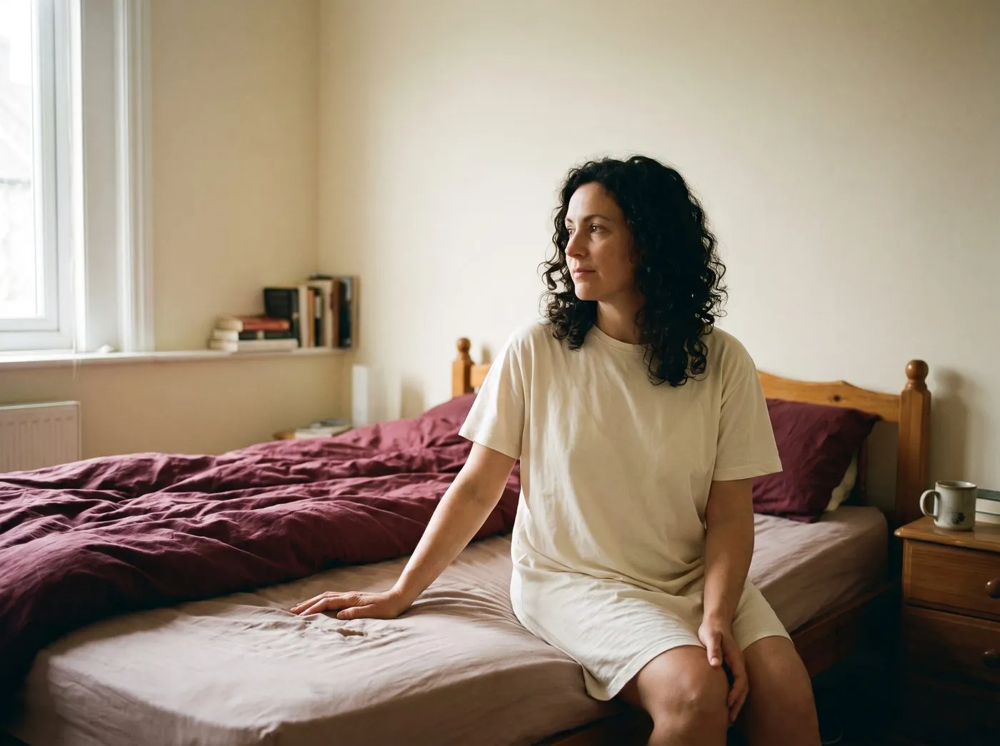
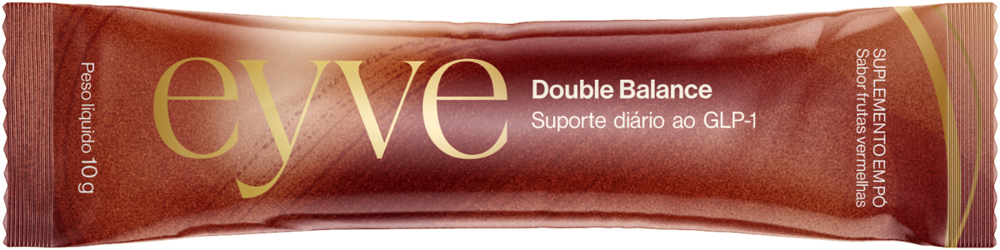
O Vácuo do Depois
Durante o emagrecimento, existe um objetivo claro: perder peso. Existe uma direção. Existe um próximo passo. Existe uma sensação de movimento. Mas quando essa primeira etapa termina, surge uma realidade diferente.
Você já conquistou. Só que agora precisa aprender a sustentar. E é justamente aí que algumas sensações podem reaparecer:
A fome.
A vontade de beliscar.
O jantar que começa a ocupar espaço demais na cabeça.
A preocupação com pequenas mudanças.
A sensação de que precisa continuar sempre alerta.
O medo silencioso de perder uma conquista que custou esforço, dinheiro, disciplina e emoção.
É isso que chamamos de Vácuo do Depois: o espaço entre ter conquistado o resultado e sentir que consegue sustentar essa nova fase com mais autonomia.
Quando não existe uma estrutura para esse momento, cada sinal pode parecer uma ameaça e, a manutenção começa a depender de decisões demais.
Mais controle.
Mais vigilância.
Mais esforço mental.
Até que cuidar do resultado começa a parecer uma segunda profissão. Mas a Segunda Fase não precisa repetir a lógica da primeira. Ela precisa de uma lógica própria.
Sistema Segunda Fase
A EYVE simplifica o que poderia virar um protocolo cheio de etapas, sem acrescentar mais uma obrigação à sua rotina.
Por isso, a fórmula reúne cinco frentes importantes para essa fase:

01 · Frente 1
Pensada pra você chegar ao jantar sem contar cada garfada.
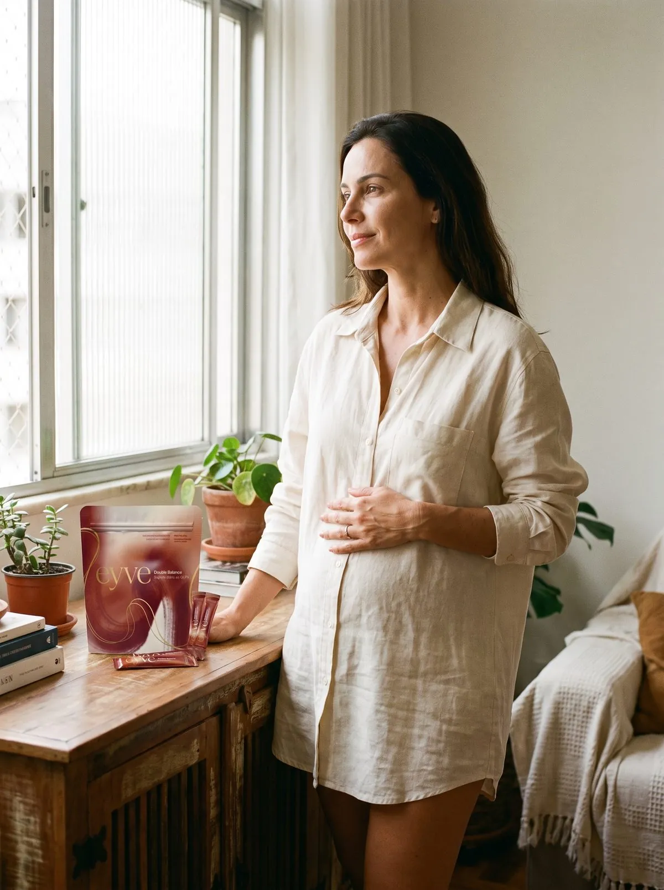
02 · Frente 2
Porque um intestino que trabalha mal também pesa na rotina dessa fase.
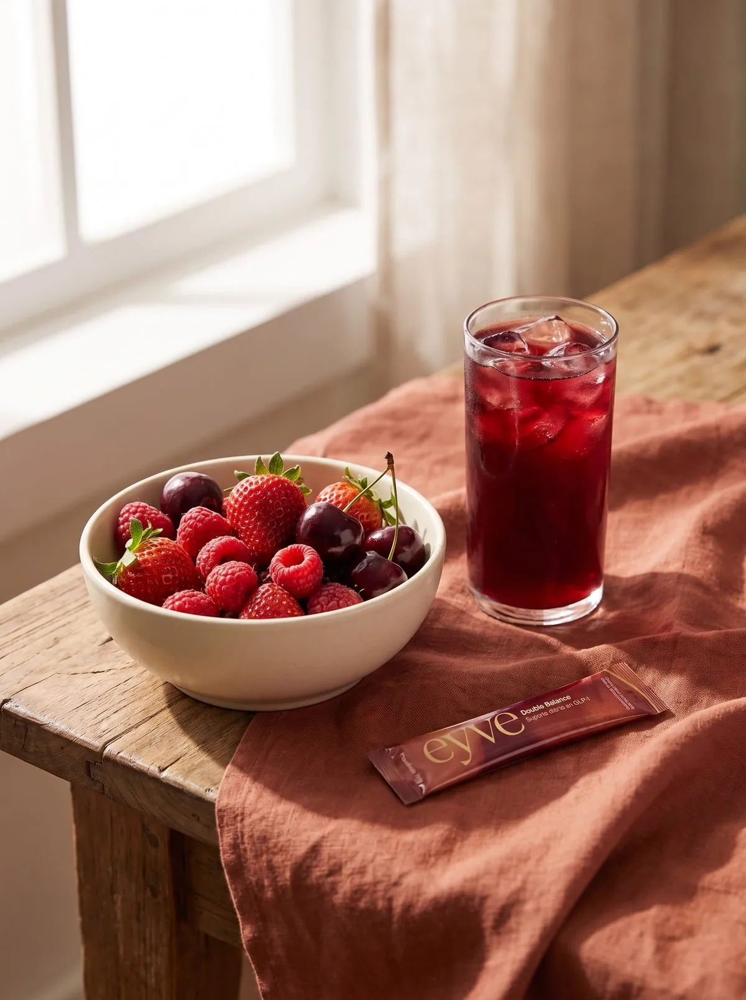
03 · Frente 3
Picos de glicose costumam vir acompanhados de picos de vontade de comer.
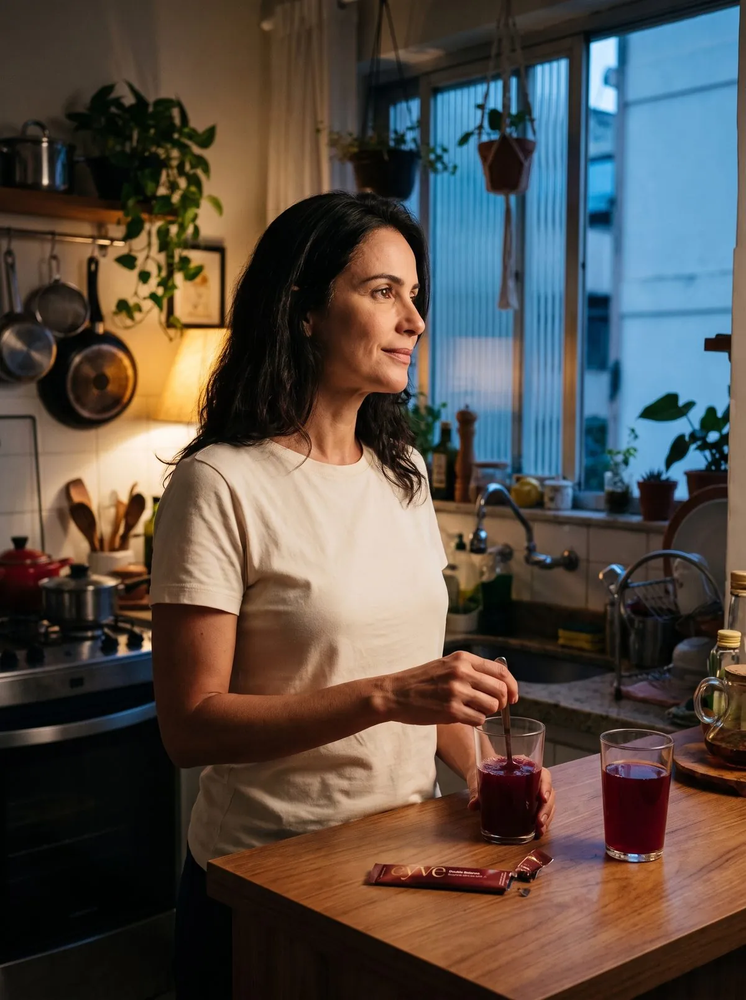
04 · Frente 4
Fome fora de hora é comum nessa fase. A proposta é ela aparecer com menos intensidade.
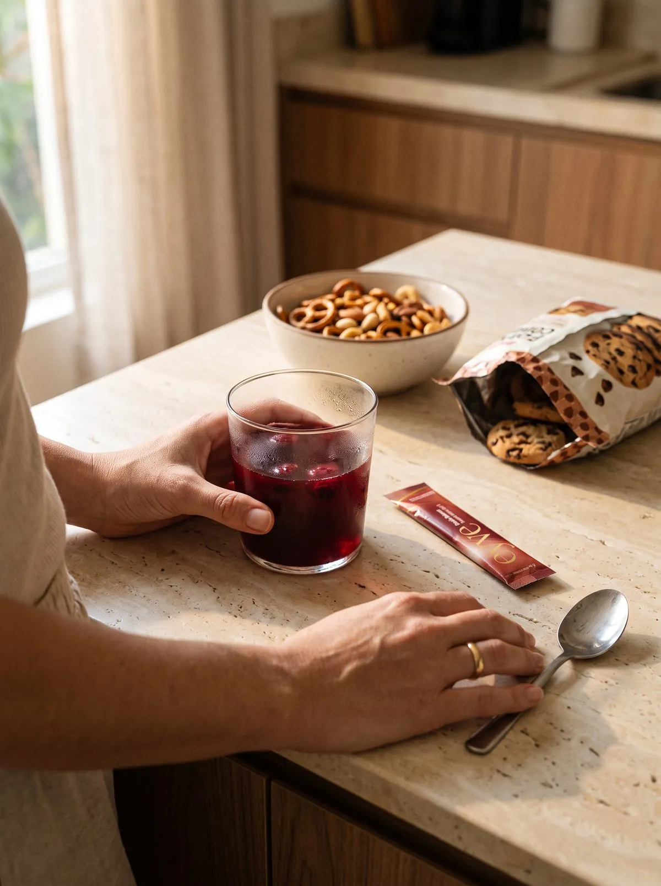
05 · Frente 5
Porque muitas vezes o desafio não está apenas nas grandes refeições, mas nos pequenos impulsos ao longo do dia.
1 sachê. 1 momento do dia.
1 ritual antes do jantar.
É essa organização que forma o Sistema Segunda Fase EYVE.
A EYVE não foi criada para substituir os hábitos que você construiu. Nem para prometer que um produto sozinho vai resolver a sua vida. Ela foi criada para tornar essa nova etapa mais simples, mais organizada e menos dependente de decisões o tempo inteiro.
Você sabe o que está consumindo, como o produto entra no seu dia e quais frentes fazem parte da proposta.
Sem transformar manutenção em mais uma guerra com você mesma.
Quero conhecer a EYVE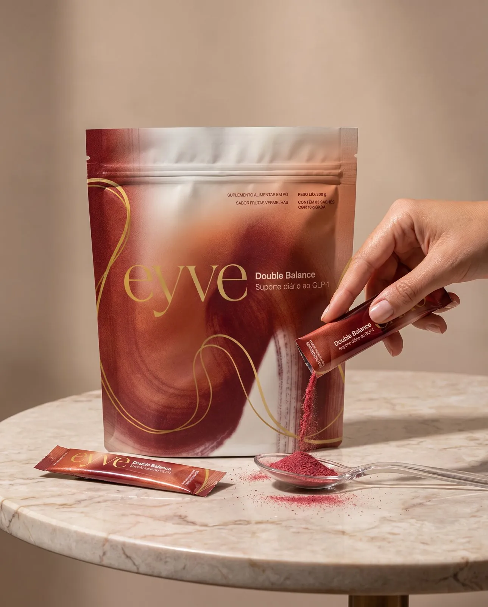
Por que um sistema, e não uma solução isolada?
Porque manter não deveria exigir que você se tornasse especialista em montar o próprio protocolo. Você poderia olhar apenas para a saciedade. Ou só para o intestino. Ou só para a fome. Ou comprar ingredientes separados e tentar montar sua própria rotina.
Mas a proposta da EYVE é simplificar. Em vez de fragmentar sua atenção entre diferentes soluções, ela reúne as cinco frentes da fórmula em um único ritual diário.
Em vez de
Vários produtos
Vários horários
Várias decisões
A EYVE propõe: um único ritual integrado a um momento que já existe no seu dia.
Sem transformar manutenção em uma segunda profissão.
Seu momento antes do jantar.
Nada de um protocolo que exige que você reorganize o dia inteiro. A lógica é simples:
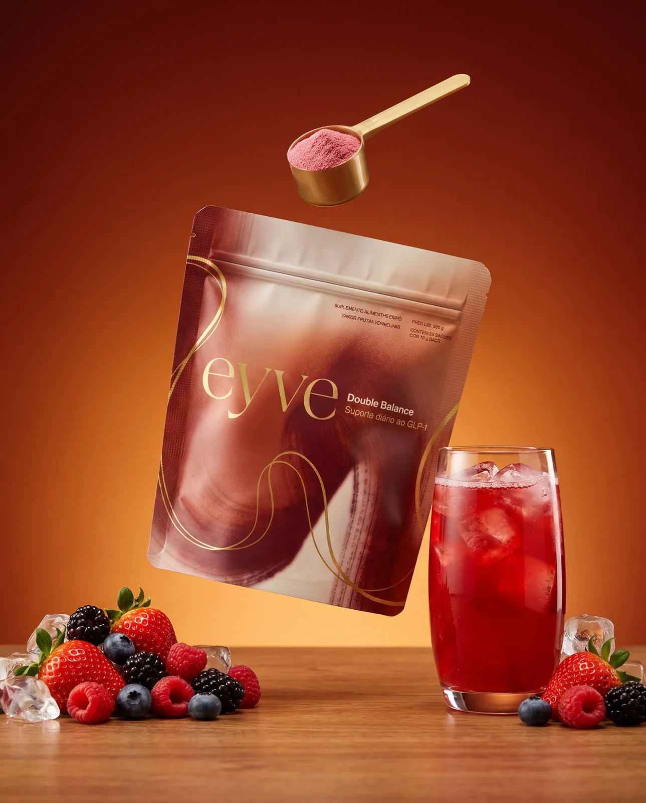
01
Sabor frutas vermelhas.
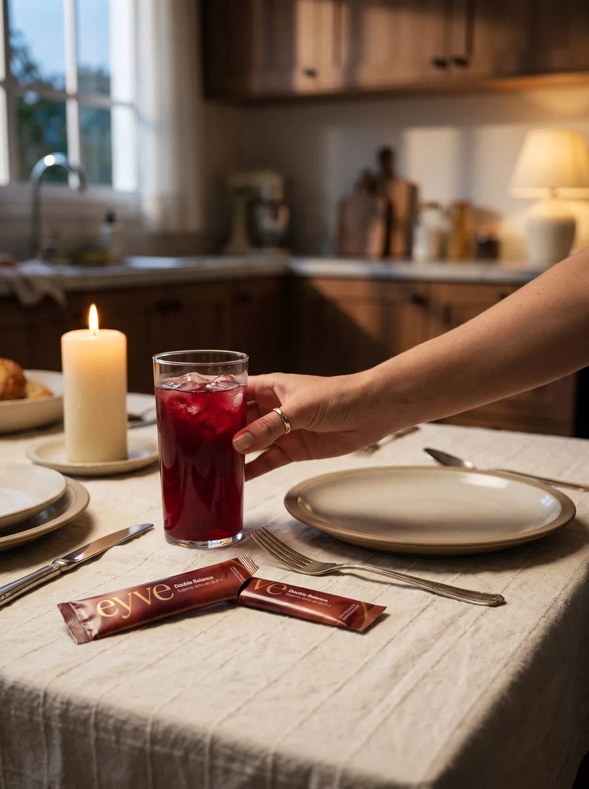
02
Um momento fácil de associar a um hábito que já faz parte do seu dia.
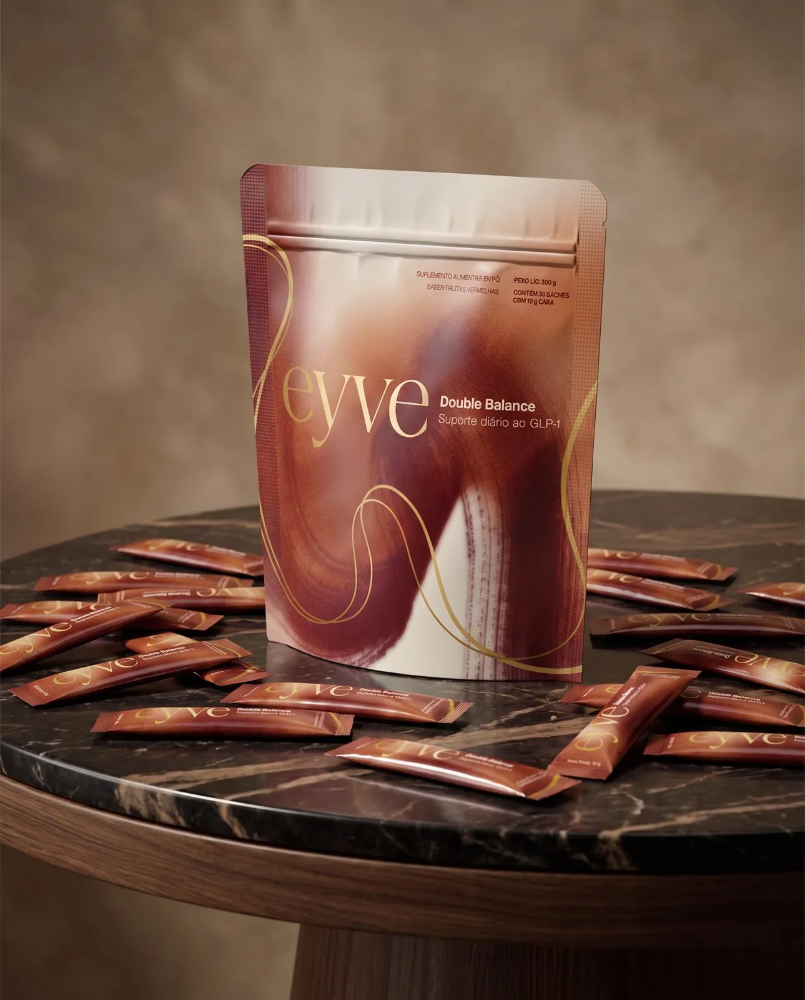
03
A consistência transforma uma ação isolada em rotina.
A ideia é justamente permitir que exista um ritual para que você não precise transformar o assunto no centro da sua vida.
Uma fórmula. Diferentes frentes de suporte.
A EYVE não reúne componentes apenas para ter uma lista extensa no rótulo. A fórmula combina fibras, compostos bioativos e ingredientes funcionais que se complementam dentro da proposta do Sistema Segunda Fase.
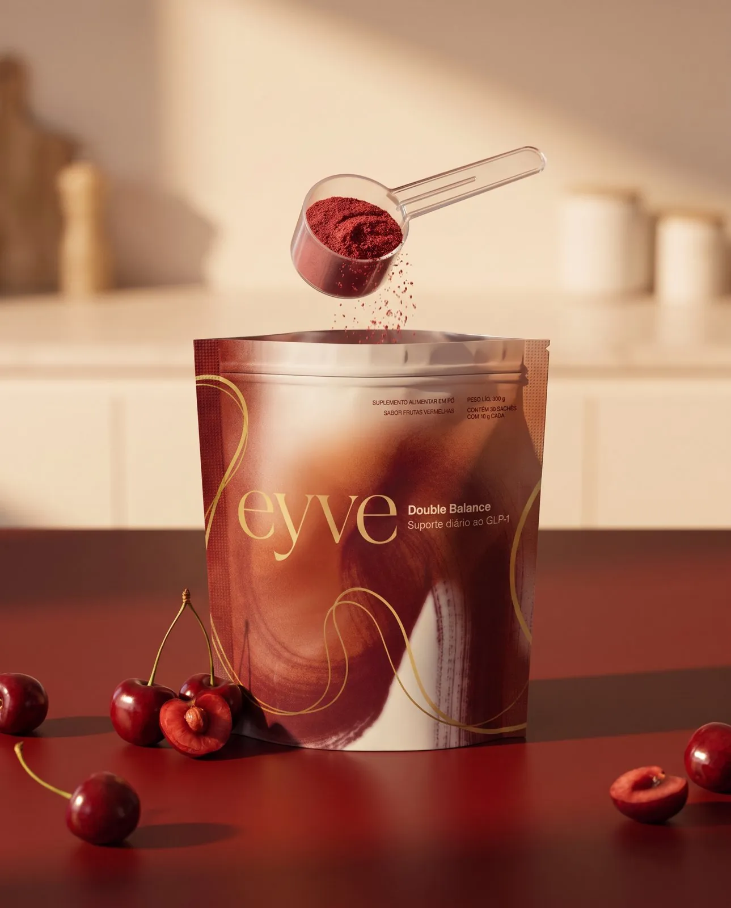
01
Ajuda a compor a frente de equilíbrio glicêmico da fórmula.
02
É uma fibra solúvel com alta capacidade de absorver água e formar uma estrutura viscosa, característica associada à sensação de preenchimento e saciedade.
03
Uma fibra solúvel que ajuda a aumentar a sensação de plenitude e também contribui para uma rotina intestinal mais equilibrada.
04
Extrato padronizado da laranja Moro, estudado por seu potencial de apoio ao gerenciamento do peso e da composição corporal.
05
O cromo participa de mecanismos ligados ao metabolismo de carboidratos, gorduras e proteínas e à ação da insulina, integrando a proposta de equilíbrio metabólico da EYVE.
06
O Nextida é uma tecnologia de peptídeos específicos de colágeno. Quando utilizado na versão Nextida GC, sua proposta está relacionada ao suporte à resposta glicêmica após as refeições e aos mecanismos naturais ligados ao GLP-1.
07
A polidextrose apresenta propriedades semelhantes às fibras e é estudada tanto pela contribuição à função intestinal quanto pela capacidade de favorecer a saciedade e reduzir o desejo de comer.
08
O hibisco é naturalmente fonte de compostos como polifenóis e antocianinas e tem sido estudado por sua relação com diferentes marcadores cardiometabólicos.
09
Sua função é adoçar a fórmula e tornar a experiência de consumo mais agradável.
10
Ajuda a construir o perfil de sabor da EYVE para que o momento antes do jantar seja mais agradável e fácil de incorporar à rotina.
11
Complementa o perfil de frutas vermelhas e contribui para transformar o consumo em um ritual sensorial, e não em mais uma obrigação.
É uma fórmula em que diferentes componentes cumprem funções diferentes dentro da mesma proposta.
Saciedade.
Suporte intestinal.
Equilíbrio metabólico.
Rotina.
Experiência de consumo.
Tudo reunido em um único ritual antes do jantar, pensado para tornar a Segunda Fase mais simples de encaixar na vida real.
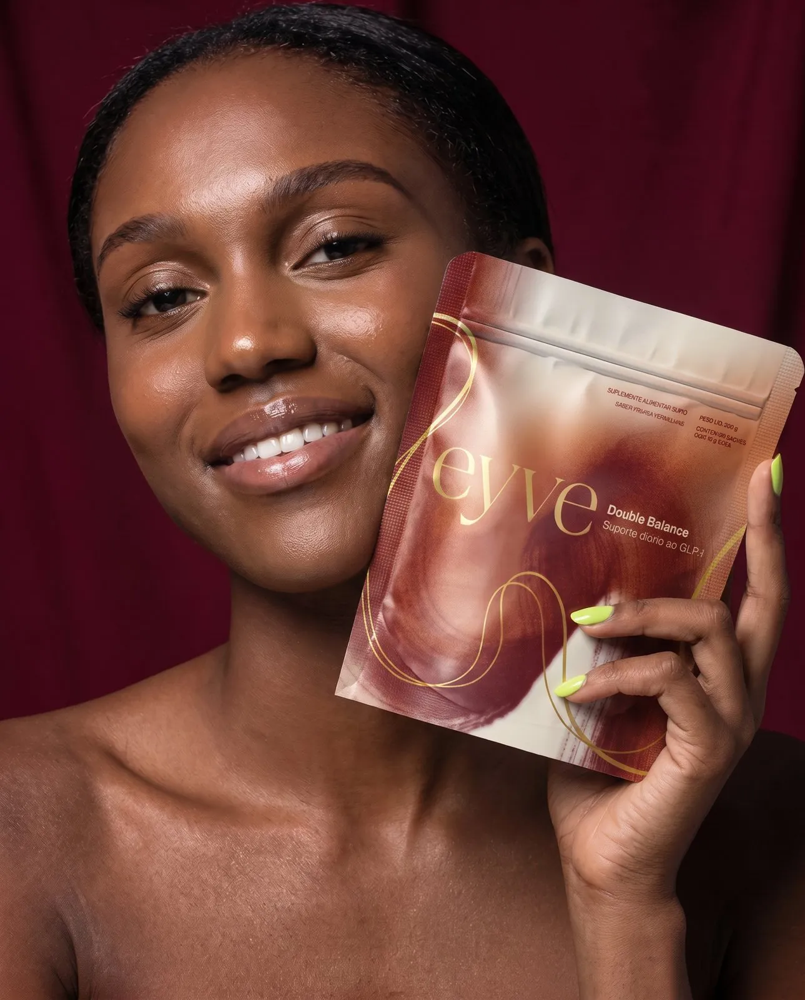
Para quem é a EYVE?
Faz sentido para você se
Já utilizou GLP-1 e está vivendo a fase pós-uso
Percebe a fome voltando aos poucos
Sente mais vontade de beliscar
Teme perder o resultado que conquistou
Quer uma rotina simples
Não deseja montar um protocolo com vários produtos
Procura uma solução pensada especificamente para esse momento
A EYVE não foi criada para quem
Busca uma solução milagrosa
Espera resultado sem nenhuma consistência de rotina
Procura apenas "mais um produto para emagrecer"
Está grávida ou amamentando
Se o seu pensamento hoje é “Eu já conquistei. Agora quero aprender a sustentar”, você está exatamente na fase para a qual a EYVE foi criada.
Experiências reais
Aqui entram as experiências de clientes reais que começaram a incorporar a EYVE à rotina pós-GLP-1.
[PENDENTE — inserir vídeo real da cliente]
Relato: [PENDENTE]
[PENDENTE — inserir trecho espontâneo e real]
[PENDENTE — inserir trecho espontâneo e real]
[PENDENTE — inserir trecho espontâneo e real]
[PENDENTE — inserir trecho espontâneo e real]
Compra única. Sem assinatura.
Escolha a opção que faz mais sentido para a sua rotina.
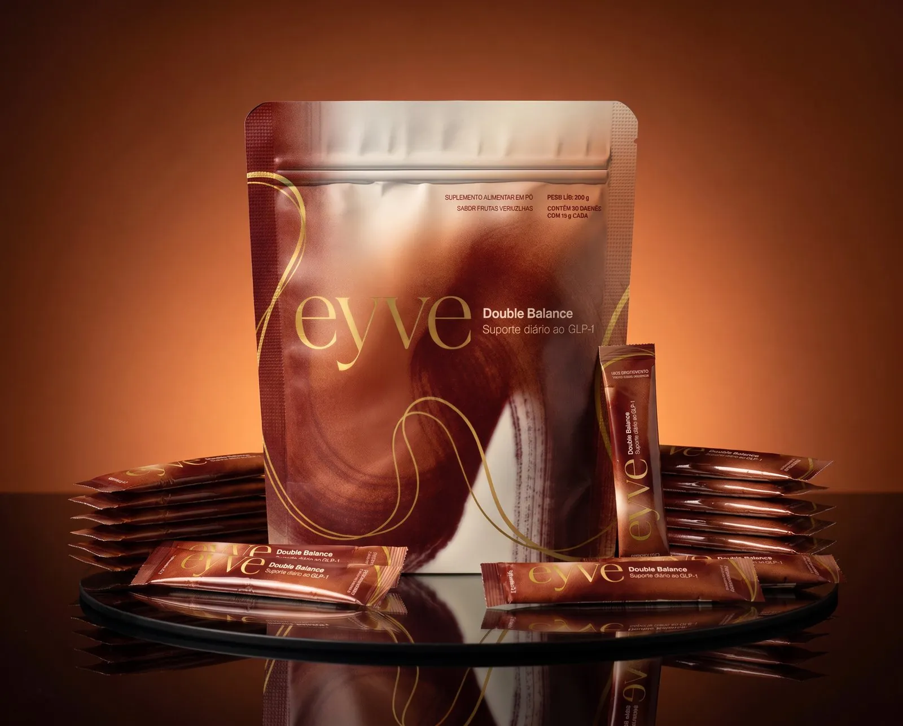
EYVE Double Balance · Sabor frutas vermelhas
1 pouch com 30 sachês de 10 g. Um sachê antes do jantar. Compra única, sem assinatura.
[PENDENTE — inserir política de frete]
R$ —
[PENDENTE — inserir condições de pagamento]
Compra única. Sem assinatura.
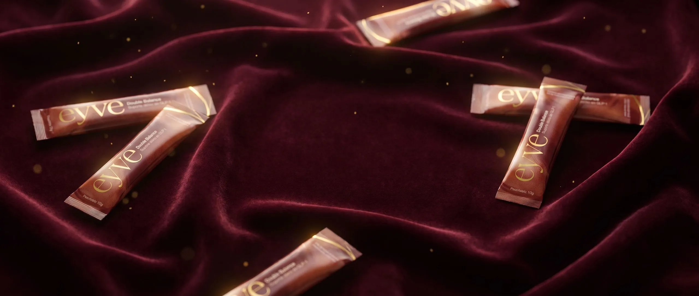
Sua decisão com mais segurança
Você terá [PENDENTE — número de dias] dias de garantia, conforme as condições oficiais da EYVE. Dentro desse período, se você se enquadrar nos critérios da política, poderá solicitar [PENDENTE — descrever como funciona o reembolso ou a devolução].
Assim, você começa sua Segunda Fase sabendo exatamente quais são as condições da sua compra.
Quero começar com a proteção da garantiaFAQ
Compra única. Sem assinatura.
A comunicação principal da EYVE é destinada à fase pós-GLP-1. [PENDENTE — inserir orientação oficial sobre uso concomitante antes da publicação]
O uso informado no briefing é antes do jantar. [PENDENTE — inserir instruções completas de preparo, quantidade de água e dosagem conforme orientação oficial]
Frutas vermelhas. A proposta é que o consumo faça parte de um ritual simples antes do jantar.
Não. A compra é única e não funciona por assinatura.
[PENDENTE — confirmar política logística]
Não. A EYVE não é indicada para gestantes ou lactantes.
[PENDENTE — não inserir prazo até existir orientação oficialmente validada para essa comunicação]
Porque a proposta da EYVE não é vender um ingrediente isolado. A fórmula reúne diferentes frentes dentro de um único produto e de um único ritual, reduzindo a necessidade de montar diferentes soluções por conta própria.
Você terá [PENDENTE — número de dias] dias, seguindo as condições oficiais da política de garantia da EYVE. [PENDENTE — complementar após definição]
Você já fez a primeira parte.
Agora não precisa passar os próximos meses olhando apenas para tudo aquilo que teme perder. Pode começar a construir a Segunda Fase em torno do que deseja preservar.
A roupa que voltou a usar.
A imagem que aprendeu a reconhecer.
A sensação de ter chegado até aqui.
A tranquilidade de não precisar tomar dezenas de decisões todos os dias.
A liberdade de viver sem transformar manutenção no centro da sua existência.
Mais simplicidade. Mais consistência. Mais estrutura.
Um ritual que cabe na vida real.
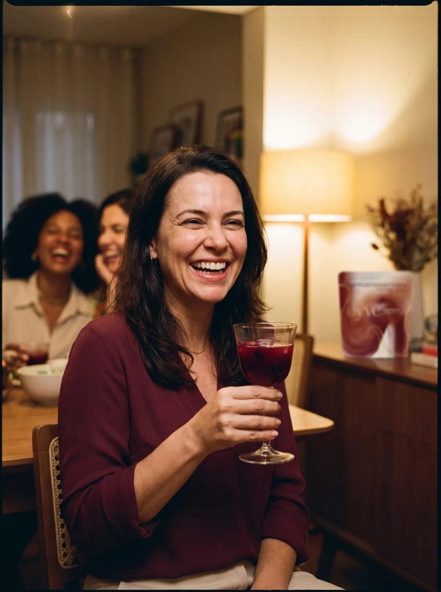
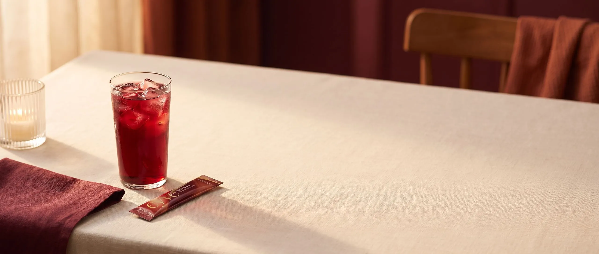
EYVE. A Segunda Fase da sua conquista.